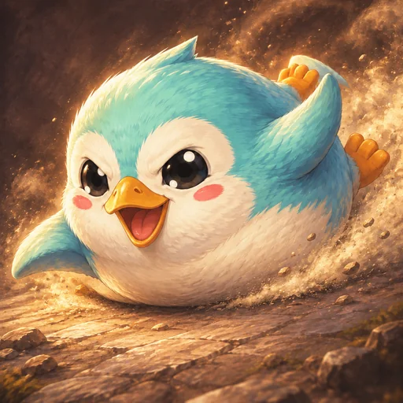
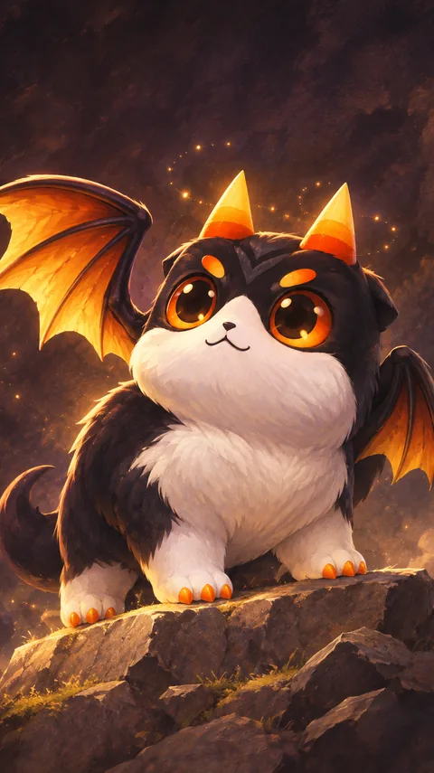
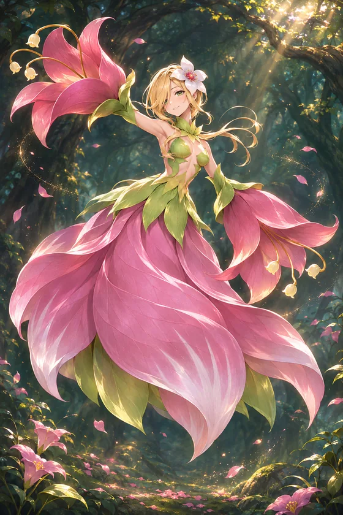
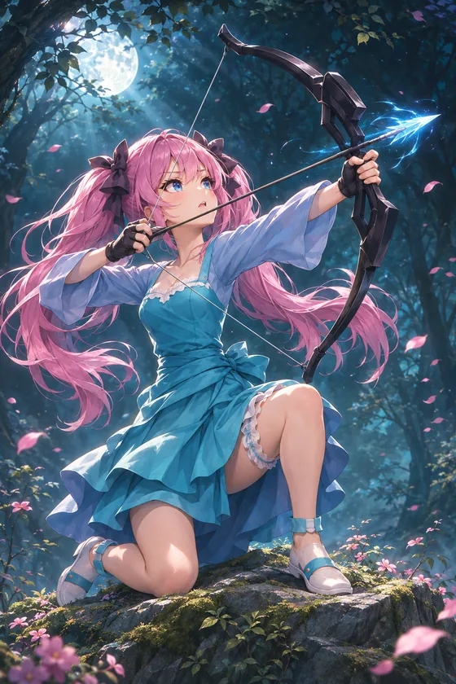
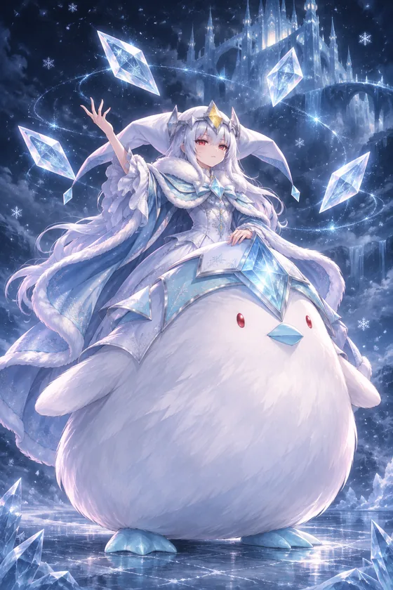
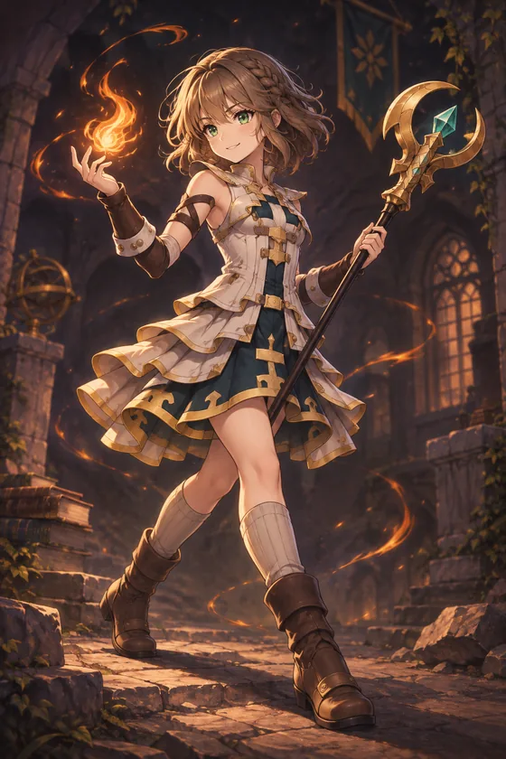
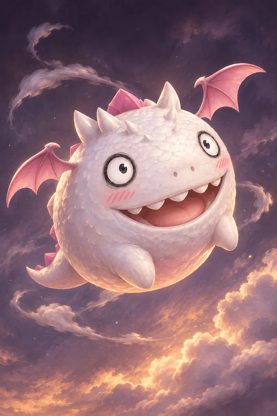
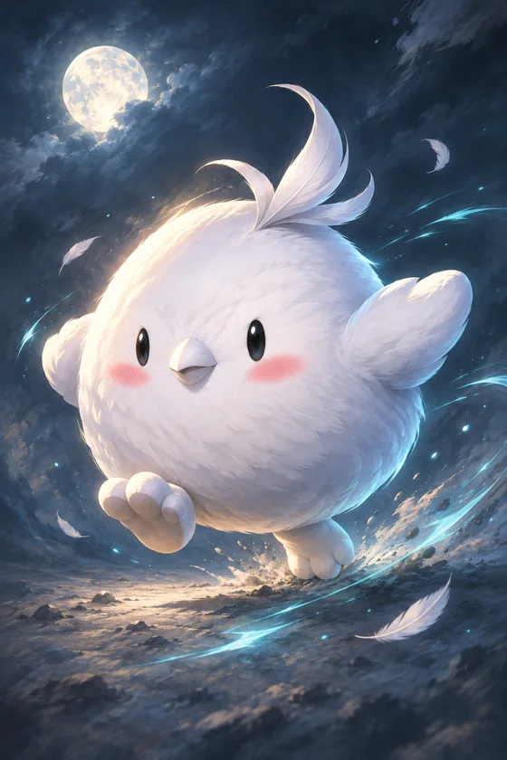

판타지 전략 · Fantasy strategy햇살이 스미는 숲과 달빛 밤하늘, 만년설 너머의 대륙을 무대로 한 모바일 판타지 전략 게임입니다. 서로 다른 계절과 풍경 속에서 한 수가 흐름을 바꾸는 순간을 만들고 있습니다.
A mobile fantasy strategy game set across sunlit woods, moonlit nights, and frozen realms. Currently in development.







짧은 호흡 안에 읽고 선택하는 모바일 전략을 다듬고 있습니다.
Focused mobile strategy built around clear decisions.
햇살 가득한 숲과 달빛 회랑, 만년설 설원까지 서로 다른 빛과 계절을 담았습니다.
Sunlit forests, moonlit halls, and snowbound fields.
정식 명칭과 플레이 화면은 준비가 끝나는 대로 차례로 공개합니다.
Official title and gameplay will be shared when ready.
개발 중인 프로젝트 관련 문의나 제휴 제안은 이메일로 보내 주세요.
For inquiries or partnership questions about Project FFR, email us below.
모바일 환경에 맞춘 판타지 전략 게임입니다. 세부 규칙과 플레이 방식은 추후 공개됩니다.
A mobile fantasy strategy game. Gameplay mechanics will be revealed later.
현재 핵심 경험과 비주얼을 다듬는 개발 단계에 있습니다. 새 소식은 이 페이지에 먼저 올라옵니다.
Currently in active development. Updates and release plans will be posted here first.